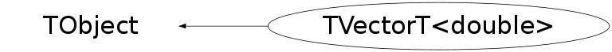

class TVectorT<double>: public TObject
TVectorT Template class of Vectors in the linear algebra package Unless otherwise specified, vector indices always start with 0, spanning up to the specified limit-1. For (n) vectors where n <= kSizeMax (5 currently) storage space is available on the stack, thus avoiding expensive allocation/ deallocation of heap space . However, this introduces of course kSizeMax overhead for each vector object . If this is an issue recompile with a new appropriate value (>=0) for kSizeMax Another way to assign and store vector data is through Use see for instance stressLinear.cxx file . Note that Constructors/assignments exists for all different matrix views For usage examples see $ROOTSYS/test/stressLinear.cxx
This class is also known as (typedefs to this class)
TVectorT<Double_t>, TVectorDFunction Members (Methods)
public:
| TVectorT<double>() | |
| TVectorT<double>(Int_t n) | |
| TVectorT<double>(const TVectorT<double>& another) | |
| TVectorT<double>(const TMatrixTRow_const<double>& mr) | |
| TVectorT<double>(const TMatrixTColumn_const<double>& mc) | |
| TVectorT<double>(const TMatrixTDiag_const<double>& md) | |
| TVectorT<double>(const TVectorT<float>& another) | |
| TVectorT<double>(Int_t lwb, Int_t upb) | |
| TVectorT<double>(Int_t n, const double* elements) | |
| TVectorT<double>(Int_t lwb, Int_t upb, const double* elements) | |
| virtual | ~TVectorT<double>() |
| TVectorT<double>& | Abs() |
| void | TObject::AbstractMethod(const char* method) const |
| void | Add(const TVectorT<double>& v) |
| void | Add(const TVectorT<double>& v1, const TVectorT<double>& v2) |
| void | AddSomeConstant(double val, const TVectorT<double>& select) |
| virtual void | TObject::AppendPad(Option_t* option = "") |
| TVectorT<double>& | Apply(const TElementActionT<double>& action) |
| TVectorT<double>& | Apply(const TElementPosActionT<double>& action) |
| virtual void | TObject::Browse(TBrowser* b) |
| static TClass* | Class() |
| virtual const char* | TObject::ClassName() const |
| virtual void | Clear(Option_t* = "") |
| virtual TObject* | TObject::Clone(const char* newname = "") const |
| virtual Int_t | TObject::Compare(const TObject* obj) const |
| virtual void | TObject::Copy(TObject& object) const |
| virtual void | TObject::Delete(Option_t* option = "")MENU |
| virtual Int_t | TObject::DistancetoPrimitive(Int_t px, Int_t py) |
| virtual void | Draw(Option_t* option = "")MENU |
| virtual void | TObject::DrawClass() constMENU |
| virtual TObject* | TObject::DrawClone(Option_t* option = "") constMENU |
| virtual void | TObject::Dump() constMENU |
| virtual void | TObject::Error(const char* method, const char* msgfmt) const |
| virtual void | TObject::Execute(const char* method, const char* params, Int_t* error = 0) |
| virtual void | TObject::Execute(TMethod* method, TObjArray* params, Int_t* error = 0) |
| virtual void | TObject::ExecuteEvent(Int_t event, Int_t px, Int_t py) |
| virtual void | TObject::Fatal(const char* method, const char* msgfmt) const |
| virtual TObject* | TObject::FindObject(const char* name) const |
| virtual TObject* | TObject::FindObject(const TObject* obj) const |
| virtual Option_t* | TObject::GetDrawOption() const |
| static Long_t | TObject::GetDtorOnly() |
| virtual const char* | TObject::GetIconName() const |
| Int_t | GetLwb() const |
| double* | GetMatrixArray() |
| const double* | GetMatrixArray() const |
| virtual const char* | TObject::GetName() const |
| Int_t | GetNoElements() const |
| Int_t | GetNrows() const |
| virtual char* | TObject::GetObjectInfo(Int_t px, Int_t py) const |
| static Bool_t | TObject::GetObjectStat() |
| virtual Option_t* | TObject::GetOption() const |
| TVectorT<double> | GetSub(Int_t row_lwb, Int_t row_upb, Option_t* option = "S") const |
| TVectorT<double>& | GetSub(Int_t row_lwb, Int_t row_upb, TVectorT<double>& target, Option_t* option = "S") const |
| virtual const char* | TObject::GetTitle() const |
| virtual UInt_t | TObject::GetUniqueID() const |
| Int_t | GetUpb() const |
| virtual Bool_t | TObject::HandleTimer(TTimer* timer) |
| virtual ULong_t | TObject::Hash() const |
| virtual void | TObject::Info(const char* method, const char* msgfmt) const |
| virtual Bool_t | TObject::InheritsFrom(const char* classname) const |
| virtual Bool_t | TObject::InheritsFrom(const TClass* cl) const |
| virtual void | TObject::Inspect() constMENU |
| void | Invalidate() |
| TVectorT<double>& | Invert() |
| void | TObject::InvertBit(UInt_t f) |
| virtual TClass* | IsA() const |
| virtual Bool_t | TObject::IsEqual(const TObject* obj) const |
| virtual Bool_t | TObject::IsFolder() const |
| Bool_t | TObject::IsOnHeap() const |
| Bool_t | IsOwner() const |
| virtual Bool_t | TObject::IsSortable() const |
| Bool_t | IsValid() const |
| Bool_t | TObject::IsZombie() const |
| virtual void | TObject::ls(Option_t* option = "") const |
| void | MakeValid() |
| Bool_t | MatchesNonZeroPattern(const TVectorT<double>& select) |
| double | Max() const |
| void | TObject::MayNotUse(const char* method) const |
| double | Min() const |
| Int_t | NonZeros() const |
| double | Norm1() const |
| double | Norm2Sqr() const |
| double | NormInf() const |
| virtual Bool_t | TObject::Notify() |
| void | TObject::Obsolete(const char* method, const char* asOfVers, const char* removedFromVers) const |
| static void | TObject::operator delete(void* ptr) |
| static void | TObject::operator delete(void* ptr, void* vp) |
| static void | TObject::operator delete[](void* ptr) |
| static void | TObject::operator delete[](void* ptr, void* vp) |
| void* | TObject::operator new(size_t sz) |
| void* | TObject::operator new(size_t sz, void* vp) |
| void* | TObject::operator new[](size_t sz) |
| void* | TObject::operator new[](size_t sz, void* vp) |
| Bool_t | operator!=(double val) const |
| const double& | operator()(Int_t ind) const |
| double& | operator()(Int_t ind) |
| TVectorT<double>& | operator*=(double val) |
| TVectorT<double>& | operator*=(const TMatrixT<double>& a) |
| TVectorT<double>& | operator*=(const TMatrixTSym<double>& a) |
| TVectorT<double>& | operator*=(const TMatrixTSparse<double>& a) |
| TVectorT<double>& | operator+=(double val) |
| TVectorT<double>& | operator+=(const TVectorT<double>& source) |
| TVectorT<double>& | operator-=(double val) |
| TVectorT<double>& | operator-=(const TVectorT<double>& source) |
| Bool_t | operator<(double val) const |
| Bool_t | operator<=(double val) const |
| TVectorT<double>& | operator=(const TVectorT<double>& source) |
| TVectorT<double>& | operator=(const TMatrixTRow_const<double>& mr) |
| TVectorT<double>& | operator=(const TMatrixTColumn_const<double>& mc) |
| TVectorT<double>& | operator=(const TMatrixTDiag_const<double>& md) |
| TVectorT<double>& | operator=(const TMatrixTSparseRow_const<double>& md) |
| TVectorT<double>& | operator=(const TMatrixTSparseDiag_const<double>& md) |
| TVectorT<double>& | operator=(double val) |
| Bool_t | operator==(double val) const |
| Bool_t | operator>(double val) const |
| Bool_t | operator>=(double val) const |
| const double& | operator[](Int_t index) const |
| double& | operator[](Int_t index) |
| virtual void | TObject::Paint(Option_t* option = "") |
| virtual void | TObject::Pop() |
| virtual void | Print(Option_t* option = "") constMENU |
| void | Randomize(double alpha, double beta, Double_t& seed) |
| virtual Int_t | TObject::Read(const char* name) |
| virtual void | TObject::RecursiveRemove(TObject* obj) |
| void | TObject::ResetBit(UInt_t f) |
| TVectorT<double>& | ResizeTo(Int_t n) |
| TVectorT<double>& | ResizeTo(const TVectorT<double>& v) |
| TVectorT<double>& | ResizeTo(Int_t lwb, Int_t upb) |
| virtual void | TObject::SaveAs(const char* filename = "", Option_t* option = "") constMENU |
| virtual void | TObject::SavePrimitive(ostream& out, Option_t* option = "") |
| TVectorT<double>& | SelectNonZeros(const TVectorT<double>& select) |
| void | TObject::SetBit(UInt_t f) |
| void | TObject::SetBit(UInt_t f, Bool_t set) |
| virtual void | TObject::SetDrawOption(Option_t* option = "")MENU |
| static void | TObject::SetDtorOnly(void* obj) |
| void | SetElements(const double* elements) |
| static void | TObject::SetObjectStat(Bool_t stat) |
| TVectorT<double>& | SetSub(Int_t row_lwb, const TVectorT<double>& source) |
| virtual void | TObject::SetUniqueID(UInt_t uid) |
| TVectorT<double>& | Shift(Int_t row_shift) |
| virtual void | ShowMembers(TMemberInspector& insp) |
| Bool_t | SomePositive(const TVectorT<double>& select) |
| TVectorT<double>& | Sqr() |
| TVectorT<double>& | Sqrt() |
| virtual void | Streamer(TBuffer& b) |
| void | StreamerNVirtual(TBuffer& b) |
| double | Sum() const |
| virtual void | TObject::SysError(const char* method, const char* msgfmt) const |
| Bool_t | TObject::TestBit(UInt_t f) const |
| Int_t | TObject::TestBits(UInt_t f) const |
| TVectorT<double>& | Use(TVectorT<double>& v) |
| const TVectorT<double>& | Use(const TVectorT<double>& v) const |
| TVectorT<double>& | Use(Int_t n, double* data) |
| const TVectorT<double>& | Use(Int_t n, const double* data) const |
| TVectorT<double>& | Use(Int_t lwb, Int_t upb, double* data) |
| const TVectorT<double>& | Use(Int_t lwb, Int_t upb, const double* data) const |
| virtual void | TObject::UseCurrentStyle() |
| virtual void | TObject::Warning(const char* method, const char* msgfmt) const |
| virtual Int_t | TObject::Write(const char* name = 0, Int_t option = 0, Int_t bufsize = 0) |
| virtual Int_t | TObject::Write(const char* name = 0, Int_t option = 0, Int_t bufsize = 0) const |
| TVectorT<double>& | Zero() |
protected:
| void | Allocate(Int_t nrows, Int_t row_lwb = 0, Int_t init = 0) |
| void | Delete_m(Int_t size, double*&) |
| virtual void | TObject::DoError(int level, const char* location, const char* fmt, va_list va) const |
| void | TObject::MakeZombie() |
| Int_t | Memcpy_m(double* newp, const double* oldp, Int_t copySize, Int_t newSize, Int_t oldSize) |
| double* | New_m(Int_t size) |
Data Members
public:
| enum { | kSizeMax | |
| kWorkMax | ||
| }; | ||
| enum EVectorStatusBits { | kStatus | |
| }; | ||
| enum TObject::EStatusBits { | kCanDelete | |
| kMustCleanup | ||
| kObjInCanvas | ||
| kIsReferenced | ||
| kHasUUID | ||
| kCannotPick | ||
| kNoContextMenu | ||
| kInvalidObject | ||
| }; | ||
| enum TObject::[unnamed] { | kIsOnHeap | |
| kNotDeleted | ||
| kZombie | ||
| kBitMask | ||
| kSingleKey | ||
| kOverwrite | ||
| kWriteDelete | ||
| }; |
Class Charts
{kind=link}
{kind=link}
{kind=link}
{kind=link}

Function documentation
void TVectorT<Element> Delete_m(Int_t size, double*& )
Delete data pointer m, if it was assigned on the heap
Element* TVectorT<Element> New_m(Int_t size)
Return data pointer . if requested size <= kSizeMax, assign pointer to the stack space
void TVectorT<Element> Add(const TVectorT<double>& v1, const TVectorT<double>& v2)
Set this vector to v1+v2
Int_t TVectorT<Element> Memcpy_m(double* newp, const double* oldp, Int_t copySize, Int_t newSize, Int_t oldSize)
Copy copySize doubles from *oldp to *newp . However take care of the situation where both pointers are assigned to the same stack space
void TVectorT<Element> Allocate(Int_t nrows, Int_t row_lwb = 0, Int_t init = 0)
Allocate new vector. Arguments are number of rows and row lowerbound (0 default).
TVectorT<Element> &TVectorT<Element> ResizeTo(Int_t lwb, Int_t upb)
Resize the vector to [lwb:upb] . New dynamic elemenst are created, the overlapping part of the old ones are copied to the new structures, then the old elements are deleleted.
TVectorT<Element> &TVectorT<Element> Use(Int_t lwb, Int_t upb, double* data)
Use the array data to fill the vector lwb..upb]
TVectorT<Element> &TVectorT<Element> GetSub(Int_t row_lwb, Int_t row_upb, TVectorT<double>& target, Option_t* option = "S") const
Get subvector [row_lwb..row_upb]; The indexing range of the
returned vector depends on the argument option:
option == "S" : return [0..row_upb-row_lwb+1] (default)
else : return [row_lwb..row_upb]
TVectorT<Element> &TVectorT<Element> SetSub(Int_t row_lwb, const TVectorT<double>& source)
Insert vector source starting at [row_lwb], thereby overwriting the part [row_lwb..row_lwb+nrows_source];
TVectorT<Element> &TVectorT<Element> Abs()
Take an absolute value of a vector, i.e. apply Abs() to each element.
TVectorT<Element> &TVectorT<Element> SelectNonZeros(const TVectorT<double>& select)
Keep only element as selected through array select non-zero
TVectorT<Element> &TVectorT<Element> operator=(const TVectorT<Element> &source)
Notice that this assignment does NOT change the ownership : if the storage space was adopted, source is copied to this space .
TVectorT<Element> &TVectorT<Element> operator=(const TMatrixTRow_const<Element> &mr)
Assign a matrix row to a vector.
TVectorT<Element> &TVectorT<Element> operator=(const TMatrixTColumn_const<Element> &mc)
Assign a matrix column to a vector.
TVectorT<Element> &TVectorT<Element> operator=(const TMatrixTDiag_const<Element> &md)
Assign the matrix diagonal to a vector.
TVectorT<Element> &TVectorT<Element> operator=(const TMatrixTSparseRow_const<Element> &mr)
Assign a sparse matrix row to a vector. The matrix row is implicitly transposed to allow the assignment in the strict sense.
TVectorT<Element> &TVectorT<Element> operator=(const TMatrixTSparseDiag_const<Element> &md)
Assign a sparse matrix diagonal to a vector.
TVectorT<Element> &TVectorT<Element> operator=(Element val)
Assign val to every element of the vector.
TVectorT<Element> &TVectorT<Element> operator+=(Element val)
Add val to every element of the vector.
TVectorT<Element> &TVectorT<Element> operator-=(Element val)
Subtract val from every element of the vector.
TVectorT<Element> &TVectorT<Element> operator*=(Element val)
Multiply every element of the vector with val.
TVectorT<Element> &TVectorT<Element> operator-=(const TVectorT<Element> &source)
Subtract vector source
TVectorT<Element> &TVectorT<Element> operator*=(const TMatrixT<Element> &a)
TVectorT<Element> &TVectorT<Element> operator*=(const TMatrixTSparse<Element> &a)
TVectorT<Element> &TVectorT<Element> operator*=(const TMatrixTSym<Element> &a)
"Inplace" multiplication target = A*target. A is symmetric .
vector size will not change
Bool_t TVectorT<Element> MatchesNonZeroPattern(const TVectorT<double>& select)
Check if vector elements as selected through array select are non-zero
Bool_t TVectorT<Element> SomePositive(const TVectorT<double>& select)
Check if vector elements as selected through array select are all positive
void TVectorT<Element> AddSomeConstant(double val, const TVectorT<double>& select)
Add to vector elements as selected through array select the value val
void TVectorT<Element> Randomize(double alpha, double beta, Double_t& seed)
randomize vector elements value
TVectorT<Element> &TVectorT<Element> Apply(const TElementActionT<Element> &action)
Apply action to each element of the vector.
TVectorT<Element> &TVectorT<Element> Apply(const TElementPosActionT<Element> &action)
Apply action to each element of the vector. In action the location of the current element is known.
void TVectorT<Element> Draw(Option_t* option = "")
Draw this vector The histogram is named "TVectorT" by default and no title
template<class Element> inline TVectorT<Element> &TVectorT<Element> Use(Int_t n, double* data)
{ return Use(0,n-1,data); }template<class Element> inline const TVectorT<Element> &TVectorT<Element> Use(Int_t n, const double* data) const
{ return Use(0,n-1,data); }template<class Element> inline TVectorT<Element> &TVectorT<Element> Use(TVectorT<double>& v)
template<class Element> inline const TVectorT<Element> &TVectorT<Element> Use(const TVectorT<double>& v) const
template<class Element> inline TVectorT<Element> TVectorT<Element> GetSub(Int_t row_lwb, Int_t row_upb, Option_t* option = "S") const
template<class Element> inline const Element &TVectorT<Element> operator()(Int_t ind) const
Access a vector element.
template<class Element> inline Element &TVectorT<Element> operator()(Int_t ind)
Access a vector element.
void SetElements(const double* elements)